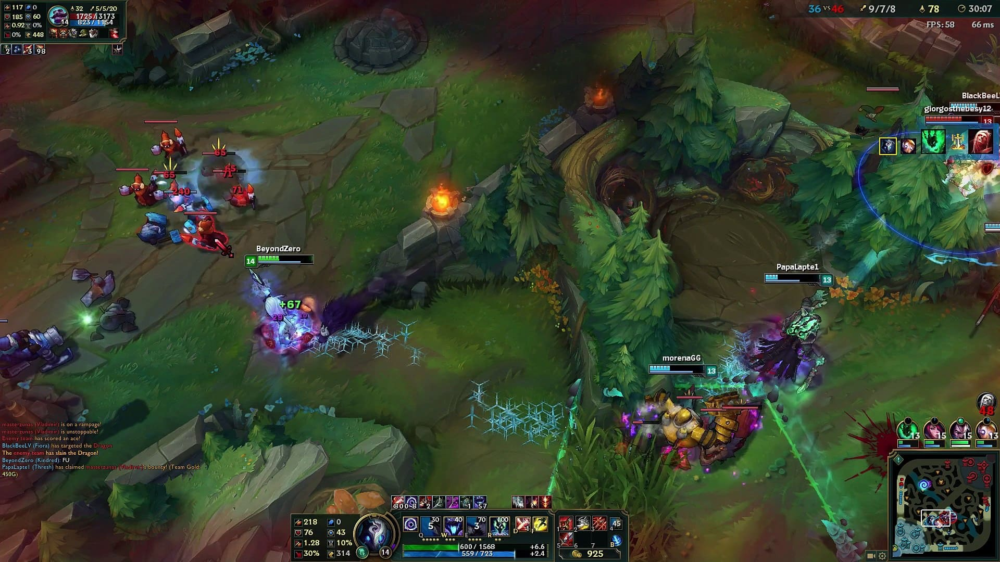
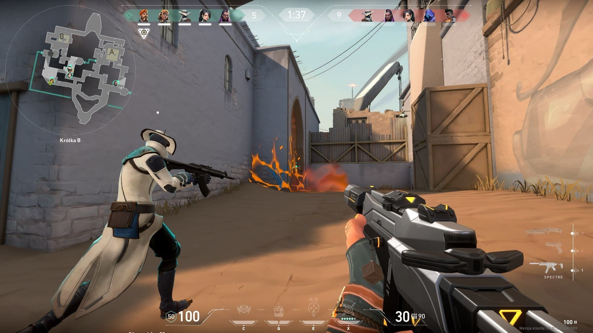
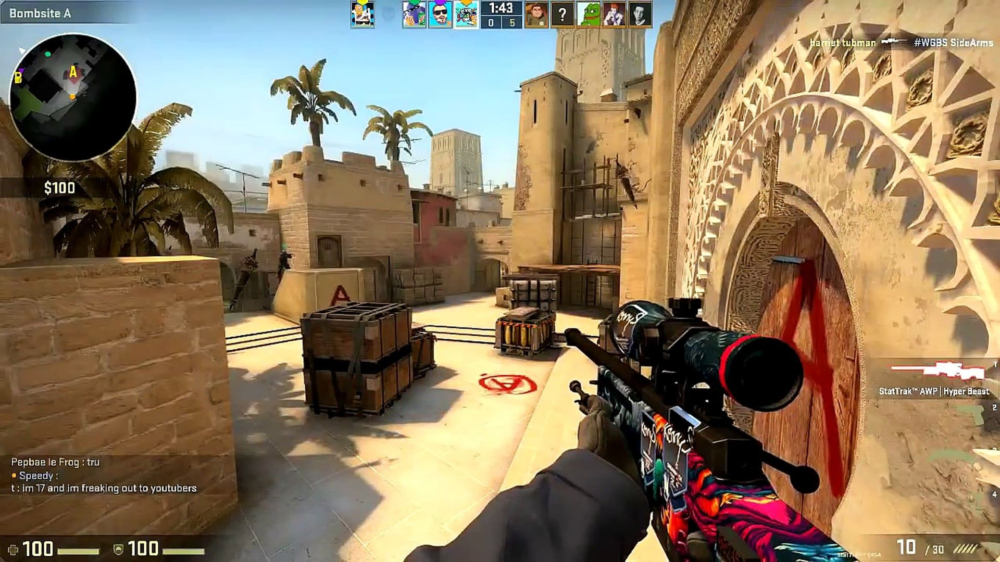
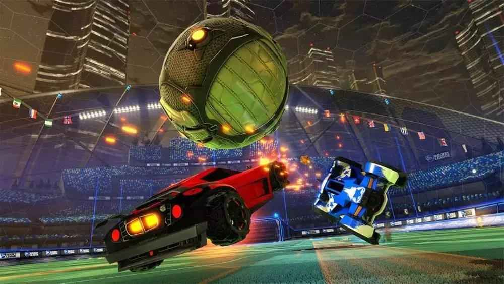

Los juegos eSports más jugados
League of Legends
En el juego, dos equipos de cinco jugadores luchan en un combate jugador contra jugador, cada equipo ocupando y defendiendo su mitad del mapa. Cada uno de los diez jugadores controla un personaje, conocido como "campeón", con habilidades únicas y diferentes estilos de juego. Durante una partida, los campeones se vuelven más poderosos acumulando puntos de experiencia y ganando oro que se emplea para la compra de artículos para derrotar al equipo contrario. En el modo principal de juego de LoL, League, "La Grieta del Invocador", un equipo gana al abrirse paso hasta la base enemiga y destruir su "nexo", una gran estructura ubicada dentro de la cual se emanan tres líneas de súbditos o "minions", personajes no jugadores que al ser eliminados por el equipo enemigo otorgan oro y experiencia
VALORANT
Se trata de un juego de disparos en primera persona (FPS) multijugador 5v5 donde un equipo ataca y el otro defiende. El modo de juego principal, Buscar y destruir, es muy similar a CS:GO. El objetivo del equipo atacante es colocar una bomba (llamada pincho) y hacer que detone, mientras que el equipo defensor intenta evitarlo. Independiente de si se planta la guerra o no, si un escuadrón es eliminado antes de que se cumpla cualquier otra condición de victoria, el escuadrón contrario ganará. Los partidos tienen una duración de 25 rondas, y cada una dura 100 segundos. El primer equipo en ganar 13 rondas gana el partido en general. Al comienzo de la ronda, tendrás 30 segundos para comprar armas y equipo para esa ronda.
Counter Strike: Global Offensive
El juego consiste en dos equipos, los Terroristas y los Antiterroristas (T y CT, respectivamente), los cuales se enfrentan entre ellos en diferentes modos de juego. El modo más común es en el cual el bando Terrorista tienen que plantar y defender una bomba mientras los Antiterroristas defender las zonas de plante de la bomba y su posterior desactivación. Hay 9 modos de juego oficiales, cada uno con sus características específicas.
Rocket league
El juego se asemeja al fútbol, pero utilizando vehículos en lugar de jugadores y una pelota de gran tamaño. En los partidos pueden participar desde 1 vs 1 hasta 3 vs 3 en modo competitivo, en modo informal se puede hasta 4 vs 4 jugadores distribuidos en dos equipos, naranja y azul o rojo y gris cuando es 2 vs 2 equipo contra equipo. Cada vehículo puede utilizar propulsión extra, tanto para acelerar como para desplazarse por el aire, siendo esta una característica fundamental del juego. Dicha propulsión puede recargarse mediante dots distribuidos en el campo de juego y que reaparecen continuamente. Los partidos duran 5 minutos, disputándose un tiempo extra indefinido en caso de empate al terminar los 5 minutos.
